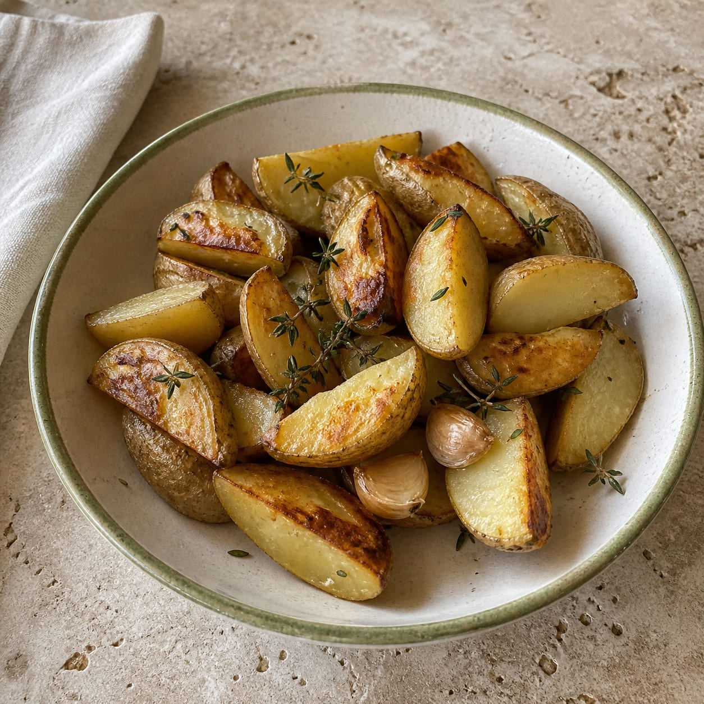
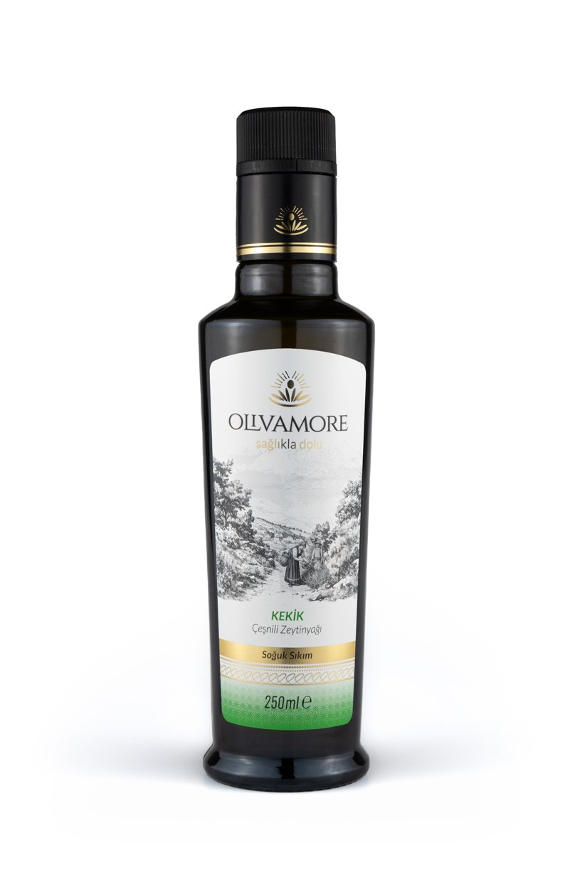

Çıtır kabuk için pişirme yağı, canlı otsu koku için fırından sonra bitirme yağı.
45 dk · 4 kişilik

Patatesi Olgun Hasat ile pişir; kekik aromasını sıcak tepside, fırından sonra aç.
Ürün sayfasına git →

← Tüm tarifler ve rehberler